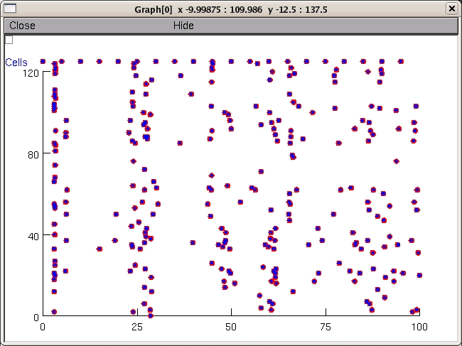

This is the readme for the model for the paper: Lytton WW, Omurtag A, Neymotin SA, Hines ML (2008) Just in time connectivity for large spiking networks Neural Comput 20(11):2745-56 These files were supplied by Bill Lytton. These NEURON files only run on the linux/nix platforms. This simulation is primarily an illustration and is not well optimized for actually running large networks. jitcon.mod contains a large amount of C level code, understanding of which requires some knowledge of Neuron internals To run either auto-launch from modeldb or download and extract the archive. In the extracted directory type nrnivmodl nrngui mosinit.hoc Once the simulation is running. Click the click here to run button. About a minute later a graph like this will hopefully appear  The simulator also launches a GUI panel that can be double clicked to look at cell traces See headers of jitcon.mod and bstick_net.hoc for extensive (though alas not complete) commentary.